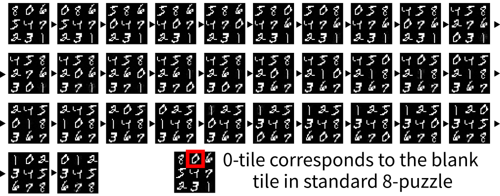
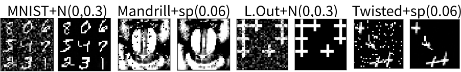

Classical Planning in
Deep Latent Space:
Bridging the Subsymbolic-Symbolic Boundary
Masataro Asai
The University of Tokyo
Note to Basel people: this presentation is aimed at the general audience who may not be familiar or even haven't heard about AI planning.
Made by guicho2.71828 (Masataro Asai)
1 Introduction
Hello, Machine Learning people!
Deep Learning, RL, data mining, etc…
- Do you identify yourself as a connectionist? ✋
First of all, hello machine learning people. Im not a machine learning person. Im usually studying a type of symbolic AI and I visited here expecting an interesting conversation with machine learning professionals.
1.1 Introduction
Hello, Symbolic AI people!
SAT, CP, Logic, TCS, …
- Have you tried any DL libraries? ✋
And also, hello other symbolic AI people. Although I am not doing exactly the same thing, we have common roots.
Let me give you one question before presenting my paper…
1.2 Introduction
I am from AI Planning community (symbolic, logic-based)
International Conference on Automated Planning and Scheduling
(AAAI sister conference, 33% avg. accept ratio, since 1990, ECP+AIPS→ICAPS)
1.3 We are working on Automated Planners
　
High-level plan for agents
plan = (action1, action2, … actionn)
Initial state → üö∂ → üöó → üî® → Goal state
　
1st-Order Logic
STRIPS/PDDL
modelling language
Close-world assumption
Combinatorial Explosion
High-dimensional
implicit state space
PSPACE-Hard
Expensive, Critical Applications
Satellite Operation
Deep Space 1
Mars Exploration Rover
　
Soundness, Completeness, Optimality
of the algorithms are important
(compared to "planning" in other AI fields)
1.4 Introduction
Today, I talk about how to integrate DL and logic-based planning systems.
2 Overview
Background
Latplan Architecture
State AutoEncoder (SAE)
break
AMA2 Overview
Action AutoEncoder (AAE)
Action Discriminator (AD)
3 Overview
Background
Latplan Architecture
State AutoEncoder (SAE)
break
AMA2 Overview
Action AutoEncoder (AAE)
Action Discriminator (AD)
4 Sliding tile puzzle (a.k.a 8-puzzle)
Initial State
Goal State

- You need to find a plan to reach the goal.
4.1 States
States as 1st-order logic formula, described in PDDL language.
Empty(x0, y0)
Is(panel6, x1, y0)
Up(y0, y1), Down(y1, y0)…
Right(x0, x1), Left(x0, x1)…
(empty x0 y0) (is panel6 x1 y0) (up y0 y1), (down y1 y0)... (right x0 x1), (left x0 x1)...
Initial State
Goal State
4.2 Transitions / Actions
Representing sliding up → Transition Rules (Actions)
- When the new location is empty:
- The current location becomes empty.
- New location is occupied and is not empty.
initial state
First-order Logic Formula
When Empty(x, yold) ∧ is(panel, x, ynew) ∧ up(ynew, yold) ;
then ¬¨ Empty(x,yold) ∧ Empty(x,ynew) ∧ ¬¨ is(panel, x, ynew) …
PDDL Model : Actual Input to the Planner
(:action slide-up ... :precondition (and (empty ?x ?y-old) ...) :effects (and (not (empty ?x ?y-old)) (empty ?x ?y-new) ...))
4.3 Symbolic planners cannot solve an Image-based 8-puzzle
- PDDL for 8-puzzle can be solved optimally << 1sec

BUT
WE
DO
NOT
HAVE
A
PDDL
MODEL!
Impractical in an unknown environment where no human is available
E.g. autonomous space exploration!
4.4 Knowledge-Acquisition Bottleneck (Cullen, 1988):
The cost of human involved for converting real-world problems into inputs for domain-independent symbolic systems
- For image-based tasks, we must automate 2 processes:
1. Symbol Grounding:
Symbols = identifiable entities
Types Examples Objects panel7, x0, y0 … Predicates (empty ?x ?y) Propositions p28 = (empty x0 y0) Actions (slide-up panel7 x0 y1)
2. Action Model Acquisition (AMA):
Describe actions.
　
When Empty(x, yold) ∧ … ;
Then ¬¨Empty(x,yold) ∧ …
- A Long-Standing Problem…
Now we propose a system which automate these processes…
4.5 Latent-Space Planner (Latplan)

(embedding the lambda calculus inside a neural architecture)
5 Survey of Exisiting Action Model Acquisition Techniques
Survey of Exisiting Action Model Acquisition Techniques
　
i.e. Systems that find action models
5.1 Limitations of Existing Systems
So far, ALL existing AMA systems require symbolic / near-symbolic, accurate state inputs and/or discrete action labels.
i.e. They need symbols to find an action model
5.2 So far, ALL existing AMA systems require symbolic inputs
ARMS (Yang AIJ07) LOCM (ICAPS09) Argall (AIJ09) Mourao (UAI12)
All taking the symbolic inputs to find the action models
5.3 Framer (ICAPS17)
Near-Symbols : Parses natural language sentences with a clear grammatical structure.
- Alleviates the burden of domain experts, but still requires human
Not handling "Natural Language":
Pick up that .. ur .. parcel over there … yes, it has a label on it, it says Parcel1, you can see it from here, the Location B. Then put it in the car, I mean the truck, the red one whose rear bumper is a bit rusty.
5.4 Konidaris, Kaelbring (AAAI14, IJCAI15)
"Constructing Symbolic Representations for High-Level Planning" (AAAI14)
- What it does
Converting a Semi-MDP Model to a PDDL Model by set-theoretic representation
i.e. Model-to-Model conversion, not generating a model from the scratch
- Semi-MDP contains Action Symbols
moveandinteract(Playroom)- Sensor inputs are structured (Labels for "State Variable" are known)
x/y-distance, light level, whether a monkey cries
→ Each sensor has a distinct meaning (no overwrap)
5.5 Learning from Video for Board Game (Bardu ICRA10; Kaiser AAAI12; Kirk 16)
Handles Images, but with strong assumptions (almost symbol) e.g.
Tic-Tac-Toe with Ellipse Detectors (Bardu 10)
→ Almost immediately provides propositions
→ Also, Domain-dependent ("3x3 grid" "Ellipse" are hard-coded)
6 Problem Setting
Problem Setting
of
Latent-Space Planner
6.1 Task: Solving an Imaged-Based 8-puzzle w/o Prior Explicit Knowledge
No Prior Knowledge : labels/symbols such as "9 tiles", "moving"
6.2 Task: Solving an Imaged-Based 8-puzzle w/o Prior Explicit Knowledge
No Prior Knowledge : labels/symbols such as "9 tiles", "moving"
6.3 Task: Solving ANY Imaged-Based tasks w/o Prior Explicit Knowledge
No Prior Knowledge : Domain-independent Image-based planner
Tower of Hanoi
Lights-Out
6.4 Inputs
The system is given 2 types of input:
- Training Input
- Planning Input
6.5 Input1: Training Input – Image Pairs
6.6 Input1: Training Input – Image Pairs
They are randomly sampled image transitions
- No state descriptions (unlike AlphaGo (Silver et al. '16))
- No expert traces (unlike AlphaGo)
- No rewards (unlike DRL systems)
No access to the simulator (unlike DQN (Mnih et al. '15) for Atari)
→ cannot ask for more examples
No action symbols (no system to our knowledge)
　　(e.g. ↑↓←→AB in Atari, grids in Go)
→ doesn't know what's happening in each transition
6.7 Input2: Planning Input – Initial Image & Goal Image
6.8 Task: Solving ANY Imaged-Based tasks w/o Prior Explicit Knowledge
6.9 Task: Solving ANY Imaged-Based tasks w/o Prior Explicit Knowledge
7 Overview
Background
Latplan Architecture
State AutoEncoder (SAE)
break
AMA2 Overview
Action AutoEncoder (AAE)
Action Discriminator (AD)
8 Latent-Space Planner (LatPlan) architechture
8.1 Step 1: Propositional Symbol Grounding
8.2 Step 2: Action Model Acquisition (AMA)
8.3 Step 3: Solve the Symbolic Planning Problem
8.4 Step 4: Executing the Symbolic Plan
8.5 Step 5: Obtaining the Visualization

8.6 Summary
Latplan: Latent-space Planner.
- bridges real-world and propositional representations.
- performs a propositional, logical, sound reasoning.
- returns a real-world output (e.g. images).
- runs in a completely automated, unsupervised manner.
9 Overview
Background
Latplan Architecture
State AutoEncoder (SAE)
break
AMA2 Overview
Action AutoEncoder (AAE)
Action Discriminator (AD)
10 State AutoEncoder (SAE)
SAE is a neural network which provides two functions:
- $b = Encode(r)$: maps a raw datum $r\;$to a bit vector $b\;$
- $\tilde{r} = Decode(b)$: maps a bit vector $b\;$to a raw datum $\tilde{r}$
- A bidirectional mapping between
- subsymbolic representation (image array) and
symbolic representation
(bit vectors = propositional variables)
10.1 Neural Network 101
10.2 Neural Network 101
10.3 Neural Network 101
10.4 Stochastic Gradient Descent + GPU

Plus misc techniques e.g. Batchnorm, Dropout
Pretty much everything is on the standard online tutorial / lecture cource / MOOP
Good libraries — Tensorflow, Keras — you can learn in 1-2 months
10.5 NN for Standard Classification Tasks (Supervised)
| Task | Input x | Output y |
|---|---|---|
| Image classification | Image | Label (1=car, 2=cat, 3=monkey …) |
- This is not suitable for our task;
- There are no labels provided by humans, i.e.
There are no real answers for symbol grounding
　
(People also ground symbols differently.
cf. How many colors in a üåà, 5,6 or 7?)
10.6 Unsupervised Learning for NN: AutoEncoder (AE)
　
Target Function: Identity $x=f(x)$
- Encode $x\;$to a latent vector $z$
- Decode $z\;$back to the input $x$
- Training: Minimize $|x - f(x)|\;$ (reconstruction loss)
→ However, ✘ Latent vector Z is real-valued
INCOMPATIBLE to propositional reasoning
10.7 Variational AutoEncoder (VAE, Kingma 2014)
An AutoEncoder that enforces a certain distribution on $Z \subset \mathbb{R}^n$over the dataset $X$
You have $X=${ 10k images of apples }. If you train a Gaussian VAE on $X$, then $Z = Encode(X) \approx N(\mu,\sigma)$for some $\mu,\sigma \in \mathbb{R}^n$.
VAE needs a reparametrization trick because random distributions are non-differentiable.
Reparametrization for $N(\mu,\sigma)$: $\mu + \sigma N(0,1)$
$\mu$and $\sigma$are differentiable (trainable) vectors, $N(0,1)$is not.
10.8 Gumbel-Softmax VAE (Jang, Gu, ICLR2017)
Additional optimization penalty which enforces $Z \sim \textbf{Categorical}$:
　　　→ $z\;$converges to a 1-hot vector e.g. $\langle 0,0,1,0 \rangle$.
Example: Represent an MNIST image with 30 variables of 8 categories.
Key idea: These categorical variables are directly usable
as the source of propositional models
In particular, 2 categories → propositional variables (true/false)
10.9 State Autoencoder (before training)
10.10 State Autoencoder (after training)

11 Verifying the feasibility of Latplan system and SAE
Q: Does the SAE (neural network) produce
sound propositions for reasoning?
AMA1 : a trivial, oracular AMA method w/o generalization.
- Encode the entire raw state transitions in the environment
For each transition, perform the following conversion:
0011 → 0101 ;; encoded bit vectors of a transition ↓ ;; one action per transition (:action action-0011-0101 ;; before-state is embedded directly :precondition (and (b0-false) (b1-false) (b2-true) (b3-true)) ;; effect = state diff :effect (and (not (b1-false)) (b1-true) (not (b2-true)) (b2-false)))
11.1 Step 3: Solve the Symbolic Planning Problem
11.2 Step 4: Executing the Symbolic Plan
11.3 Step 5: Obtaining the Visualization
12 AMA1 Experiments
SAE: trained with 20k images (note: > 360k entire states in 8-puzzle)
- SAE is generalizing
AMA1: requires the entire transistions (note: > 1M transitions in 8-puzzle)
- AMA1 is NOT generalizing, being an oracle
Planner: a State-of-the-Art, Fast Downward (Helmert, 08)
- $A^*$(optimal search) : It must find an optimal solution
- Runtime: ~3sec (instances are too small for symbolic systems)
12.1 8-puzzle Results with MNIST tiles (MNIST 8-puzzle)
8-puzzle using digits from MNIST database

An instance whose optimal solution length is known
→ 31 step optimal plan
12.2 Results with photographic, unseparated tiles (Mandrill 8-puzzle)
MNIST 8-puzzle has cleanly separated objects -> This domain does not.
12.3 Results with photographic, unseparated tiles (Mandrill 8-puzzle)
→ Optimal Solution
12.4 Results with photographic, unseparated tiles (Spider 8-puzzle)
Notice that latplan has no idea that this is an 8-puzzle; Thus MNIST, Mandrill, Spider are entirely different domains (state encoding is also different)
12.5 Tower of Hanoi (3 disks, 4 disks)
Completely different puzzle problems can be solved by the same system

→ Optimal Solution (7 steps,15 steps)
12.6 Lights Out
Does not assume "objects" are static (objects may disappear)
→ Optimal Solution
12.7 Twisted Lights Out
Does not assume grid-like structures
→ Optimal Solution
12.8 Handling the Noisy Input
SAE implementation uses a denoising layer (Denoising AE, Vincent 08)

→ Benefit from existing DL methods immediately
→ Improved speed, robustness, accuracy
13 Why bother the off-the-shelf planner? Shouldn't the blind search do?
Domain-independent lowerbounds work, SURPRISINGLY!
This is NOT a trivial finding!
lower-bounds are…
- taylored for man-made domains
- assumes the domain has a structure
Blind search even sometimes outperform sophisticated methods on man-made instances (Edelkamp 12)
- lb works → more difficult problems can be solved (future work)
　
Number of states expanded, mean(stdev.)
| domain | N | Dijkstra | A*+PDB |
|---|---|---|---|
| MNIST | 13 | 210k(50k) | 97k (53k) |
| Mandrill | 12 | 176k(13k) | 112k (57k) |
| Spider | 13 | 275k(65k) | 58k (30k) |
| Hanoi | 30 | 20.7(29.7) | 12.6 (22.0) |
| LightsOut | 16 | 433(610.4) | 130 (164) |
| Twisted | 16 | 398(683.1) | 29.3 (62.4) |
N : number of instances.
14 Why Gumbel-Softmax is necessary?
- Alternative 1: Use a normal NN and round the encoder output?
- ✘ The decoder is not trained with 0/1 value, cannot obtain the meaningful output
- Alternative 2: Include the round operation in a NN?
- ✘ Rounding is non-differentiable / Backpropagation impossible
15 State Autoencoder Conclusion
- SAE can learn from small examples
- 20k training images → learn to map 360k unseen images
- SAE-based propositions are sound
- Given the oracular AMA1, planners can reason over the propositions
- Latplan maintains the theoretical guarantee in the search algorithm
- Given the complete state space graph,
- Optimising algorithm (A*) returns an optimal solution
- Completeness is guaranteed
16 * ☕ Break ☕ *
Background
Latplan Architecture
State AutoEncoder (SAE)
☕ Break ☕
AMA2 Overview
Action AutoEncoder (AAE)
Action Discriminator (AD)
17 Overview
Background
Latplan Architecture
State AutoEncoder (SAE)
break
AMA2 Overview
Action AutoEncoder (AAE)
Action Discriminator (AD)
18 SAE Feasible! Now what?
AMA1 is impractical, cannot obtain entire data in the real world
AMA should
learn / generalize
from small examples
- → AMA2, a novel neural architecture
19 The Task of AMA2 : The Real AMA method
Input: Propositional transitions $\{ (s,t) \ldots \}$
($Encod$'ed from Training Input)
Action Symbol Grounding
(:action slide-up-tile7-at-x0-y1 ...Action Preconditon Learning
:precondition (and (empty x0 y0) ...)Action Effect Learning
:effects (and (empty x0 y1) (not ...)))
19.1 Why action symbols are necessary?
Planners typically perform a forward search (Dijkstra, $A^＊$)
Without Action Symbols, successor generation becomes challenging
SAE with $|z|=36 \text{bit}$
→ Generate $2^{36}$potential successors, then filter the invalid
- With action symbols, (e.g. up, down, left, right)
- → We can enumerate the candidates in constant time.
19.2 Challenge: Training Input lacks action symbols
Should identify the number of schemas from what is un/affected
19.3 Challenge: Precondition/Effect learning is not trivial
Case 1: Linear Space
- We do not need an action label; it is linear anyways
- Then, AMA ≡ prediction task ($\approx$scene prediction in video)
- We can train a neural network $a(s) = t\;$by minimizing $|t-a(s)|$
- Most DL literature follows this path
19.4 Challenge: Precondition/Effect learning is not trivial
Case 2: Graphs
- Multiple action labels
Varying number of successors
for each state
- Cannot train $a(s) = t\;$for each $a$ because we don't know which $(s,t)$belongs to which $a$.
- Correct Question: What is the right function to learn?
20 AMA2 Overview
20.1 AMA2 Overview
20.2 AMA2 Overview
20.3 AMA2 Overview
20.4 AMA2 Overview
21 Overview
Background
Latplan Architecture
State AutoEncoder (SAE)
break
AMA2 Overview
Action AutoEncoder (AAE)
Action Discriminator (AD)
22 Action AutoEncoder
What is the right function to learn?
$a(s) = t$?
We cannot train this
$a$is a variable!
$apply(a,s) = t$
Transition is a mapping
action $a → $ successor $t$
conditioned by
the current state $s$
The right function to learn!
22.1 Implementing $(a \rightarrow t) | s$
22.2 Implementing $(a \rightarrow t) | s$
22.3 Implementing $(a \rightarrow t) | s$
22.4 Implementing $(a \rightarrow t) | s$
23 Overview
Background
Latplan Architecture
State AutoEncoder (SAE)
break
AMA2 Overview
Action AutoEncoder (AAE)
Action Discriminator (AD)
24 Action Discriminator learns preconditions
24.1 Action Discriminator learns Preconditions = Binary Classifer
Binary classifier telling which transitions are valid
- Trained by a positive and negative dataset
- We have data for valid transitions (observed data).
- Where are the negative (invalid) datasets?
24.2 Negative dataset
- Invalid transitions: All transitions that are not valid.
- We lack the definition; Cannot be generated.
- Can we collect the invalid data?
Teleportation violates the laws of physics. (at least in a macro scale)

- Invalid transitions never happen → an autonomous agent cannot possibly collect data in the real world.
- Collecting a negative dataset is fundamentally impossible
24.3 Solution: PU-Learning (Elkan & Noto, KDD 08')
Training a positive & negative classifier from the positive & unlabelled datasets.
- Positive: Training Input. Observed data are valid, guaranteed
- Unlabelled: Successor candidates generated by the AAE
- Some are valid, some are invalid
Now we can train the AD!
(SD explanation: skipped)
25 Planning using AMA2
AAE enumerates the canditates; AD/SD filters the invalid.
\begin{align*} Succ(s) &= \{t = apply(a,s) \; | \; a \in \{0\ldots 127\},\\ & \qquad \land AD(s,t) \geq 0.5 \\ & \qquad \land SD(t) \geq 0.5 \} \end{align*}We have action symbols and propositional states!
Now we can run $A^*$with goal-count heuristics
26 AMA2 Experiments 1
Is it feasibile to do planning with AAE and AD?
- 100 instances for each domain
- self-avoiding random walks from the goal state
- (benchmark A) 7-step
- (benchmark B) 14-step
- 180 sec. time limit
- Domain-specific plan validators.
26.1 Results
Noise are applied to the planning inputs (init/goal images)
G: Gaussian noise, s/p: salt/pepper noise
- Easy instances: Majority of instances are solved
- Harder instances: Still many instances are solved
| / | < | > | < | > | ||
|---|---|---|---|---|---|---|
| step | 7 | 7 | 7 | 14 | 14 | 14 |
| noise | std | G | s/p | std | G | s/p |
| MNIST | 72 | 64 | 64 | 6 | 4 | 3 |
| Mandrill | 100 | 100 | 100 | 9 | 14 | 14 |
| Spider | 94 | 99 | 98 | 29 | 36 | 38 |
| LightsOut | 100 | 99 | 100 | 59 | 60 | 51 |
| Twisted LO | 96 | 65 | 98 | 75 | 68 | 72 |
27 AMA2 Experiments 2
How accurate are Action Discriminators?
Measure the type-1 / type-2 error in %
| type1 | type2 | |
|---|---|---|
| MNIST | 1.55 | 6.15 |
| Mandrill | 1.10 | 2.93 |
| Spider | 1.22 | 4.97 |
| L. Out | 0.03 | 1.64 |
| Twisted | 0.02 | 1.82 |
| Hanoi | 0.25 | 3.79 |
- (AD type-1)
- Generate all valid transitions and count the number of misclassification.
- (AD type-2)
- For 1000 randomly selected valid states, generate all successors, prune by SD, remove the valid transitions (w/ validator), then count the transitions misclassified as valid.
- Reasonably accurate.
28 Conclusion
- Latplan: The first system which completely automatically generates a classical, symbolic planning model from scratch
State AutoEncoder(SAE) : real-world states ↔ propositional states
Action AutoEncoder(AAE) : transitions ↔ action labels, effects
Action Discriminator(AD) : transition → bool with PU-Learning
Two of the major grounding problems were solved!
Types of symbols Propositional symbols Solved! Action symbols Solved! Object symbols Computer Vision techniques? Predicate symbols ??? Future work: improved accuracy, runtime efficiency.
This opens many avenue for future research.
28.1 Future Work (Input format)
LatPlan is an architecture : Any system with SAE is an implementation
Different SAE → reason about different types of raw data
- Autoencoders for text, audio [Li 2015, Deng 2010]
- Example:
- Transition rule "This is an apple, this is a pen → oh, ApplePen!"
When this happens, Latplan brings AI to a new level e.g.
1000 steps of natural language reasoning with logic, not by reflex
- Fundamentally impossible for short-sighted / greedy agents
"A hierarchical neural autoencoder for paragraphs and documents." (2015)
"Binary coding of speech spectrograms using a deep auto-encoder." (2010)
28.2 Future Work (Extended planning formalism)
- Latplan assumes nothing about the environment machinery (grids, movable tiles…)
- Latplan assumes fully-observable, deterministic domains
- Next step: Extending Latplan to MDP, POMDP
- Gumbel-Softmax layer → just a Softmax layer? (probability)
- $AO^*$, $LAO^*$algorithms for optimal planning under uncertainty
28.3 Future Work (Propositional → First-order)
SAE can generate propositional symbols (state $s = \{q,r\ldots\}$)
- 1st-order logic (predicate $p(a,b)$)
- We need object recognition from images (parameters $a,b$)
- SAE with networks for object recognition (e.g. R-CNN) should achieve this
28.4 Future Work (Knowledge extraction)
AMA2 (AAE/AD) is a neural network, thus precondition/effects are in a blackbox
Hinders deriving heuristic functions
Knowledge extraction by Konidaris et al.('14,'15), δ-ILP (Deepmind) ?
29 Appendix
Using the Remaining Time (Discussion)
29.1 Konidaris et. al (2014, 2015):
Structured input (e.g. light switch, x/y-distance) ↔ unstructured image
Action Symbols (move, interact)
Just converting Semi-MDP model to a PDDL model.
Could be used for extracting PDDL from AAE/AD
29.2 NNs for solving combinatorial tasks:
TSP (Hopfield and Tank 1985)
Neurosolver for ToH (Bieszczad and Kuchar 2015)
The input/output are symbolic.
29.3 Other Work Combining Symbolic Search and NNs
Embedded NNs inside a search to provide the search control knowledge
(i.e. node evaluation function)
Sliding-tile puzzle and Rubik’s Cube (Arfaee et al. 2011)
Classical planning (Satzger and Kramer 2013)
The game of Go (AlphaGo, Silver et al. 2016)
29.4 Deep Reinforcement Learning (DRL) (Mnih et al. 2015, DQN)
DQN assumes predetermined action symbols (↑↓←→+ buttons).
DQN relies on simulators. ↔ Latplan reverse-engineers a simulator.
DQN does not work when it does not know what action is even possible!
29.5 Other Interesting Systems
SCAN system (deepmind)
Maps continuous latent vector and human-provided symbolic vector
- This does not make sense. They are missing points
- Because they don't know what symbols are for
- They are for efficient, automated reasoning!
- Floats are not efficient, humans shouldn't be involved
δ-ILP (Inductive Logic Programming)
- ILP robust to noise
- Extracting rules from AAE/AD to form a PDDL?
29.6 Why not individual pixels? Why DL?
Systems based on individual pixels lack generalization
Noise / variations can make the data entirely different
- must acquire the generalized features
- = a nonlinear function that recognize the entanglements between multiple pixels
29.7 Learning vs Planning
Main differences: Purposes and the abstraction layer
Machine Learning, Neural Networks
for Recognition, Reflex
Subsymbolic Input (continuous)
Images, Audio, unstructured text:
Soft Intelligence:
　 Reflex Agent, Immediate actions
Pavlov's dog : bell → drool
Autonomous Driving : Pedestrian → Stop.
Machine Translation : Sentence → Sentence
Eval. Function for Go : board → win-rate
☺ Efficient 1-to-1 mapping
☹ Simple tasks
Deliberation, Search
for Planning, Game, Theorem Proving
Symbolic Input/Output
Logic, objects, induction rules
Hard Intelligence by Logic:
　 Multi-step strategies
Rescue Robot : actions → help the surviver
Theorem Proving : theorems → QED
Compiler : x86 instructions
Game of Go : stones → Win
☺ Ordering constraint + complex tasks
- AlphaGo = Subsymbolic (DLNN eval. function) + Symbolic (MCTS)
29.8 Human-Competitive Systems
AlphaGo = Subsymbolic (NN eval. func) + Symbolic (MCTS)
- However, domain-specific – specialized in Go, "Grids" / "Stones" are known
- Huge expert trace DB — Not applicable when data are scarse (e.g. space exploration)
Is supervised learning necessary for human?
True intelligence should search / collect data by itself
DQN = Subsymbolic (DLNN) + Reinforcement Learning (DLNN)
Domain-independent Atari Game solver (Invader, Packman…), however:
- RL Acting: Greedily follow the learned policy → no deliberation!
- You can survive most Atari games by reflex
29.9 Latplan Advantages
Perception based on DLNN
— Robust systems augmented by the latest DL tech
Decision Making based on Classical Planning
— Better Theoretical Guarantee than Reinforcement Learning
Completeness (Finds solution whenever possible), Solution Optimality
— Decision Making Independent from Learning
Unsupervised (No data required), Explainable (Search by logic)
29.10 When Latplan returns a wrong solution?
Machine learning may contain errors (convergence only on $t\rightarrow \infty$, not on real time)
- Images → Fraud symbols/model/graph
Optimal path on a fraud graph or graph disconnected
A* completeness, soundness, optimality (admissible heuristics)
- Fraud visualized plan (noisy) / no plan found
LatPlan may make wrong observations but no wrong decisions
BTW, "correctness" is defined by error prone observations by humans anyways …
(completeness, optimality) → better reliablility than Reinforcement Learning
29.11 Reinforcement Learning
Both perception and decision making depend on training
- When the learned policy is wrong,
- the solution could be suboptimal
- It could even fail to find solutions (incomplete agent)
… AlphaGo was unprepared for Lee Sedol‚Äôs Move 78 because it didn‚Äôt think that a human would ever play it.
Cade Metz. "In Two Moves, that Redifined the Future." Wired, 2016
RL may make wrong decisions.
29.12 Why symbols?
Symbols are strong abstraction mechanisms becasue
- Meanings do not matter
No understanding necessary: Does a symbol $X$mean an apple or a car?
Logical reasoning by mechanical application of rules
Domain-independent planning : mystery vs nomystery
Logistic domains where symbol names are mangled (truck → shark)
- Composable
A latent vector is a conjunction (and)
Heuristic functions use modus ponens to derive guidance
30 This is the start of neural-symbolic AI!
(yeah I really like a catchy phrase)